Растительный мир
В Алтайском заповеднике можно встретить множество редких растений. Например, здесь растут такие редкие виды, как алтайская лилия, алтайская родиола и алтайский шалфей, а также множество видов грибов и плодов. Весной и летом местность покрывается разноцветными цветами. Здесь можно увидеть эдельвейс, купаву, алтайскую астру и многие другие цветы.
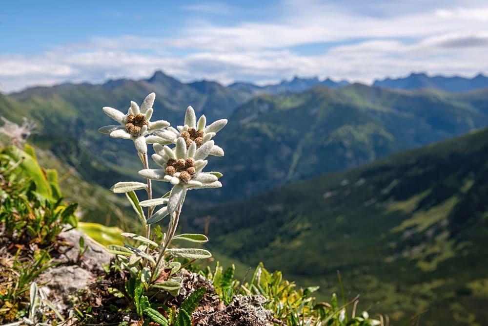
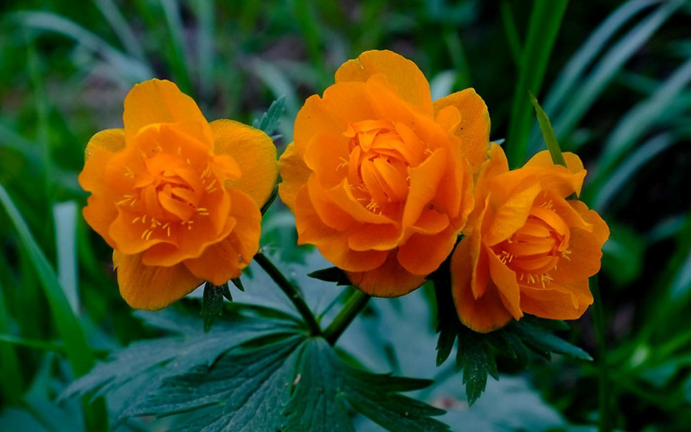
В Алтайском заповеднике насчитывается 1500 видов высших сосудистых растений, из которых в Красную книгу Республики Алтай занесены 49 видов растений и 22 занесены в Красную книгу Российской Федерации
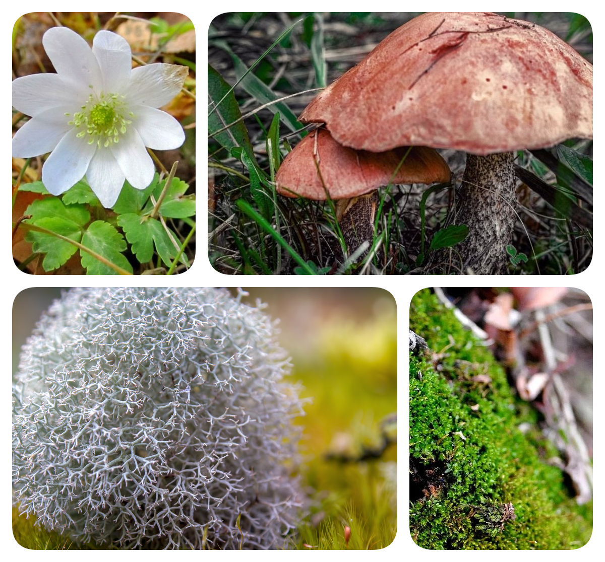
Насчитывается более 500 видов водорослей и лишайников. Леса заповедника состоят в основном из хвойных пород, таких как сибирская лиственница, сибирский кедр и сибирская пихта; 34 вида мхов, грибов, лишайников и сосудистых растений занесены в Красную книгу Республики Алтай и России. На территории Алтайского заповедника встречается более 200 эндемичных видов и редких степных, лесных, тугайных и альпийских сообществ. Под охраной находится и исконная дриадовая тундростепь. Это свидетельствует о выдающейся роли Алтайского заповедника в сохранении флоры и растительности Южной Сибири.
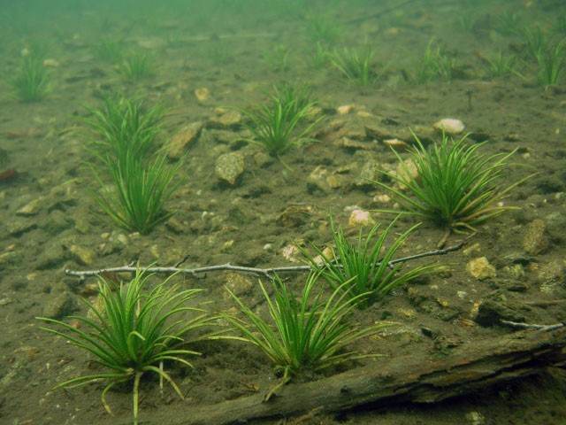
Полушник озёрный — Isoetes lacustris L (Вид находится под угрозой исчезновения. Занесён в Красную книгу России 2008 год. Статус: 2 (V). Уязвимый вид),
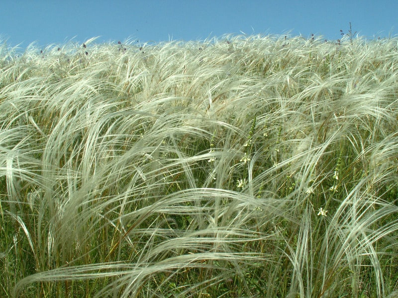
Ковыль перистый — Stipa pennata L (Красная книга Российской Федерации 2008 год, Красную книгу Монголии. Уязвимый вид. Сокращает численность популяций. Статус: 2 (V)),
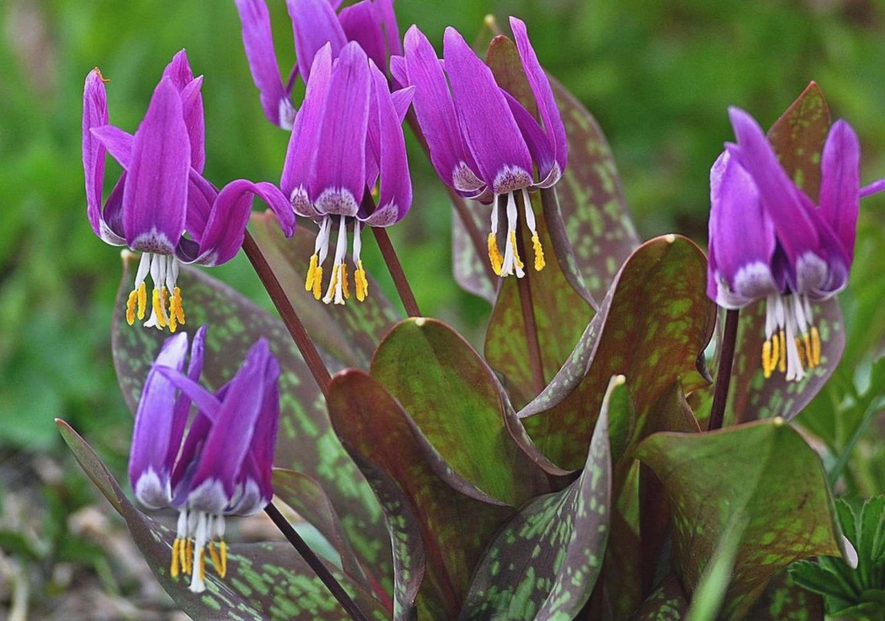
Кандык сибирский — Erythronium sibiricum (Fisch. et Mey) Kryl. (Красная книга Российской Федерации 2008 год Статус. III категория. Редкий вид),
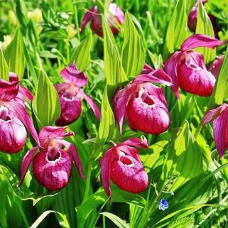
Венерин башмачок вздутый Cypripedium ventricosum Sw. (Красная книга Российской Федерации 2008 год Статус. 3 (R). Редкий вид.),
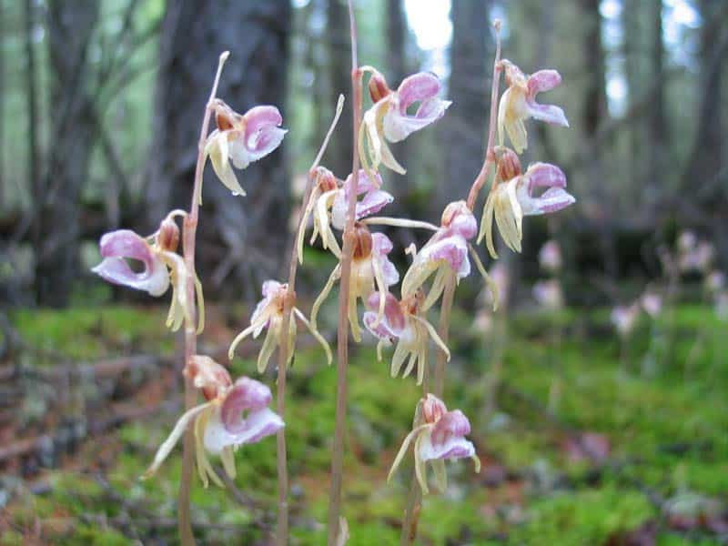
Надбородник безлистный — Epipogium aphyllum (F.W.Schmidt) Sw. (Красная книга Российской Федерации 2008 год Статус. 4 (1). Вид с неопределенным статусом.),
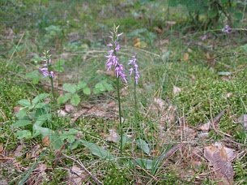
Неоттианте клобучковая — Neottianthe cucullata (L.) Schecht. (Красная книга Российской Федерации 2008 год Статус. 3 (R). Редкий вид.),
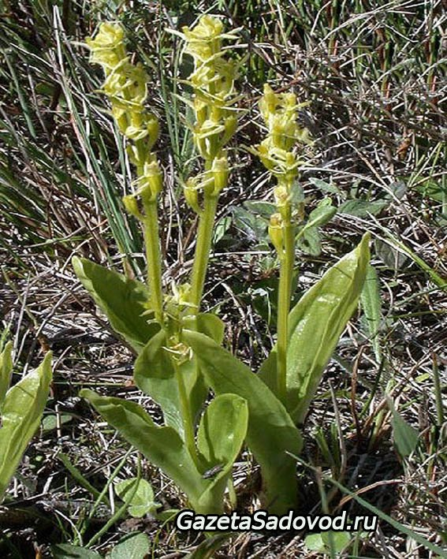
Липарис Лезеля — Liparis loeselii (L.)Rich (Красная книга Российской Федерации 2008 год Статус. 3 (R). Редкий вид.),
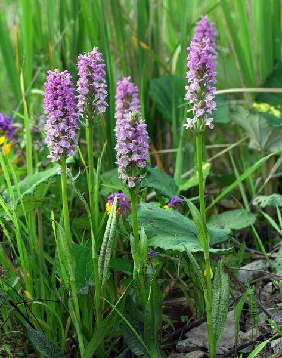
Пальцекорник балтийский — Dactylorhiza baltica (Klinge) Orlova (Красная книга Российской Федерации 2008 год Статус. 2 (У). Уязвимый вид с неопределенным статусом.),
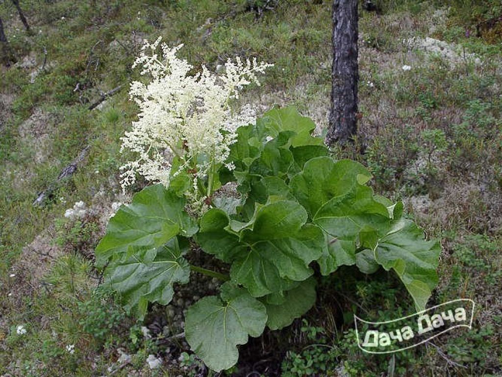
Ревень алтайский — Rheum altaicum Losinsk. (Красная книга Российской Федерации 2008 год. Ресурсное растение, эндемик Статус: 3 (R). Редкий вид),
49 видов растений занесены — в Красную книгу Республики Алтай.